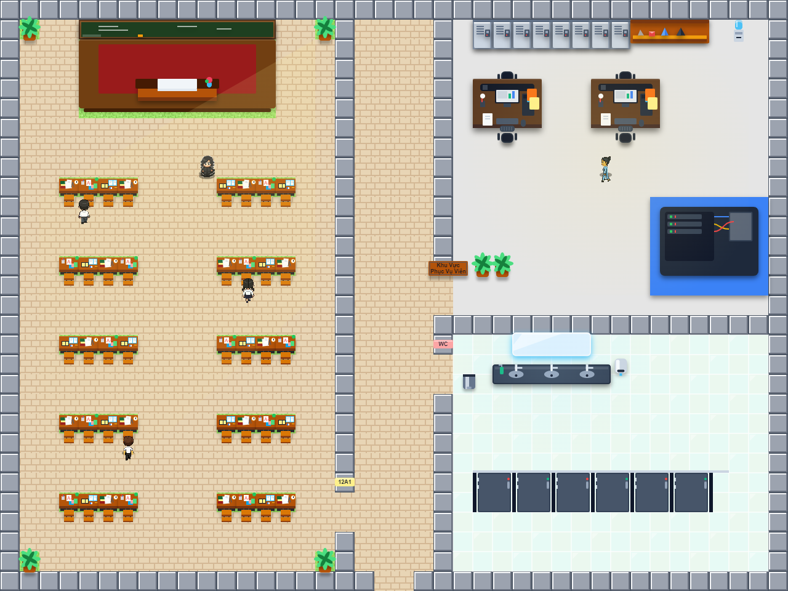
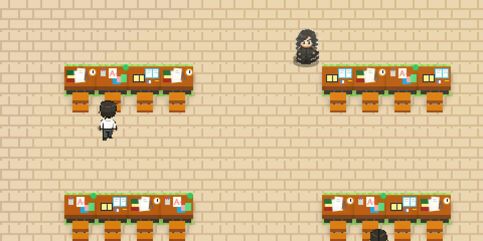
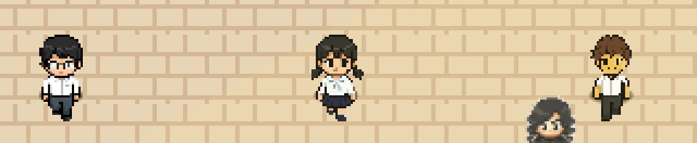
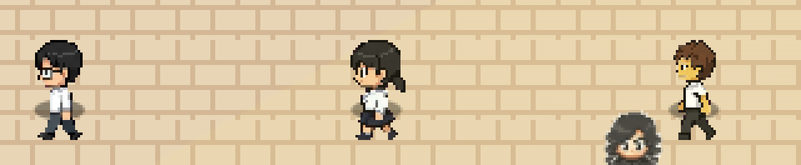
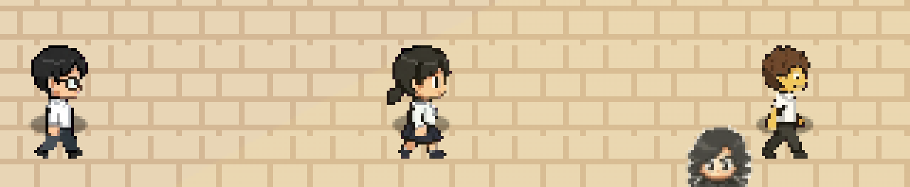
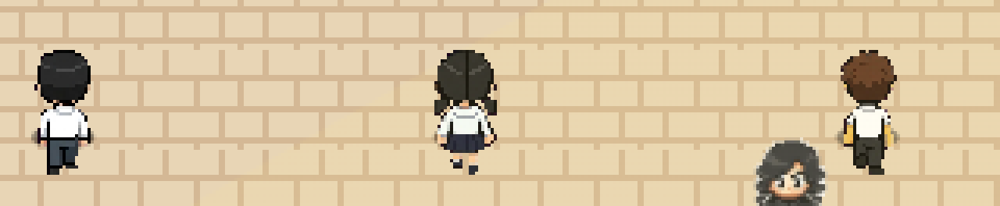
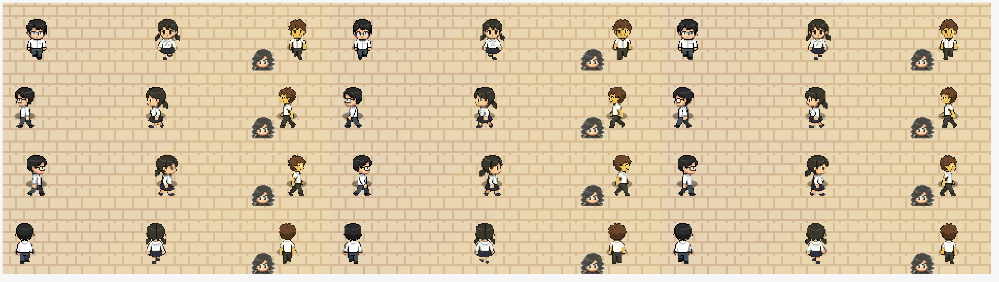
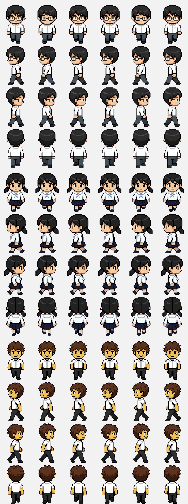

Toàn bộ ảnh dưới đây lấy trực tiếp từ canvas của game đang chạy (không phải ảnh dàn dựng), nên đúng là những gì người chơi nhìn thấy.

Bản đồ lớp 40×30 ô. Ba bạn: Nam classmate1 (4,10), Hoa classmate2 (12,14), Tuấn classmate3 (6,22) — đều quay up (nhìn lên bảng).

XUỐNG (nhìn thẳng)

TRÁI

PHẢI

LÊN (nhìn sau lưng)


Mỗi hàng là một hướng, ba cột là ba khung pose (chân trái bước → chân phải bước → về vị trí). Cả ba nhân vật đổi tư thế chân giữa các cột.

Không còn pixel hồng/magenta, không còn vệt sao watermark ở góc dưới-phải hàng 3.